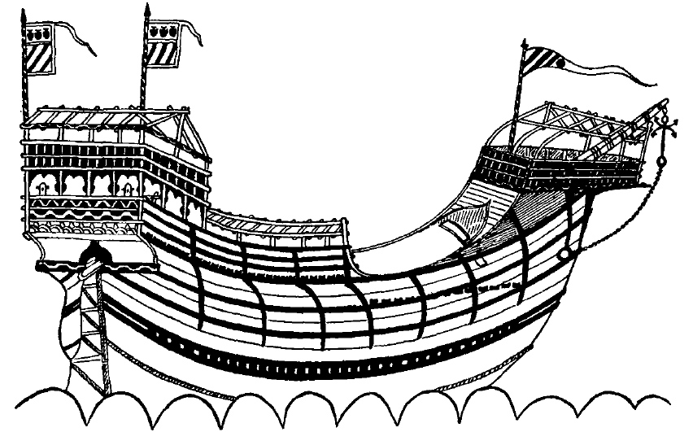
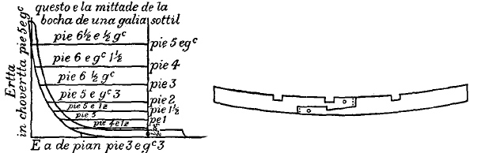
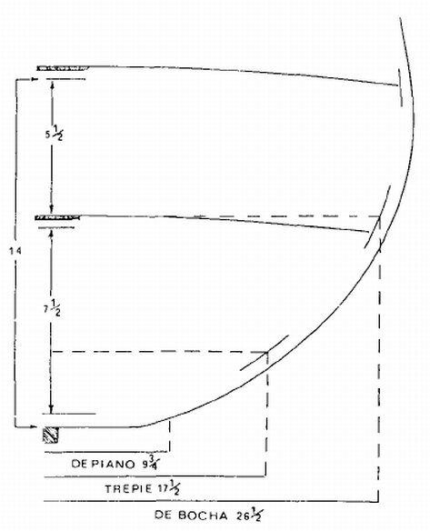
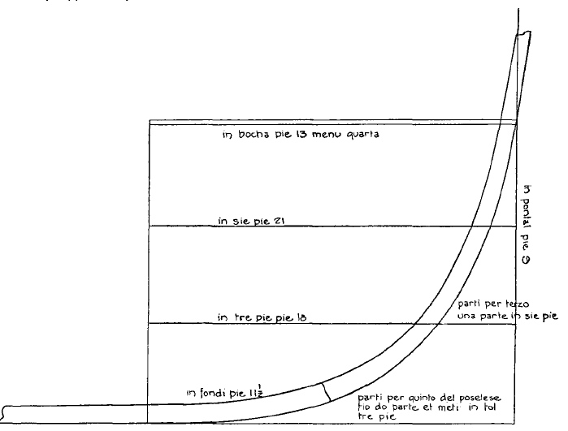
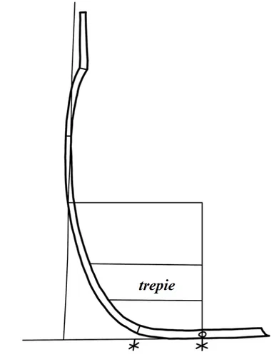

На протяжении достаточно длительного времени мы рассказывали о парусных кораблях XV-XVI веков, все время откладывая на потом разговор об их устройстве: конструкции корпуса, особенностях рангоута и такелажа, парусном вооружении. Да и словарь использовали обычный, рассчитанный на неискушенного читателя, принятый во всех популярных книгах и статьях по морской истории без учета их временнóй и географической привязки. Сегодня постараемся исправить эти недостатки. Начнем с кога, или, в средиземноморском языке, cocha венецианской постройки середины XV века. Терминологию, конкретные цифры и некоторые иллюстрации для этой цели возьмем из манускрипта Fabrica di Galere, историю которого мы совсем недавно расписали со всеми подробностями, а также других трактатов по морской архитектуре той эпохи.
Я не буду сейчас повторять историю появления кога на Средиземном море, желающие всегда могут посмотреть ее в моих предыдущих постах. Для нас важно понять, что конструкция венецианской коки (cocha, chocha) явилась сплавом североевропейской и средиземноморской традиций в кораблестроении, соединившим в себе лучшие качества той и другой, главными из которых были набранный вгладь корпус (южная традиция) и прямой парус (традиция Северной Европы).

Изображение корпуса корабля венецианской постройки грузоподъемностью 1000 ботта из манускрипта Тимботта (Британский музей )
Прежде, как обычно, несколько слов об единицах измерения. В интересующем нас трактате все линейные измерения даны в тех единицах, которые применялись на кораблестроительных верфях Венеции. Мы их уже приводили в нашем журнале раньше. В сегодняшней записи будем для удобства принимать значение венецианского фута равным 34,8 см и величины длины, которые даны в двойных шагах (passo, 1пассо=5 венецианских футов) будем сразу же переводить в футы.
Итак, корпус.
Fabrica di Galere начинает описание cocha длиной по килю 13 пассо (65 футов=22,62 м) с размеров плоской части его днища – piano:
Al nome de dio Nui volemo far una Nave quadra de passa 13 in in cholumba & de haver de piano el quarto meno de cio che Ia cholumba fosse longa. Serave pedi 9 ¾ .
Во имя Господа. Мы желаем построить корабль с прямыми парусами с длиной киля 65 футов и шириной днища на одну четверь меньше длины киля. Что равняется 9 ¾ фута (~3,40 м) .
(л.37)
С первых шагов чтения трактата мы окунулись в атмосферу условностей, понятных читателю-современнику, но, мягко говоря, ставящих нас в тупик. Начиная инструкцию, мастер пишет о строительстве Nave quadra, затем, без всякого объяснения он начинает называть строящийся корабль кокой (chocha: «E vole esser Ia dita chocha longa in choverta…» и т.д.). Из чего мы должны сделать вывод, что на момент постройки корабля названия Nave quadra (корабль с прямыми парусами) и chocha (ког) были синонимами. В качестве родового понятия для них используется термин Nave – корабль. Будем надеяться, что пока с этим-то мы разобрались.
Идем дальше. Из того, что мастер применяет термин piano (плоскость) к нижней части корпуса, к его днищу, мы можем предположить, что chocha была плоскодонным судном. Но не будем торопиться с этим заключением. Во-первых, это было судно с килем (cholumba), а значит назвать его плоскодонкой язык не поворачивается. В русском языке понятия плоскодонное судно, плоскодонка весьма приблизительно описывают конструкцию нижней части корпуса. В словаре Самойлова дается попытка придать этим терминам некоторую строгость (ПЛОСКОДОННОЕ СУДНО (Flat bottomed ship) — судно, у которого угол подъема днища от киля до скулы равен 0°), но это определение напрочь исключает те суда, малые и большие, которые вообще не имеют киля, но тем не менее не перестают быть плоскодонными. И в других языках нет точного эквивалента венецианскому piano, перевод дается описательно (как, например, англ. : flat bottom и т.п.). Не означает использование термина piano и того, что днище коки было абсолютно плоским. Если бы мы соединили прямыми линиями все точки, соответствующие данным в трактате размерам корпуса, то получили бы некое подобие современного корабля системы стелс. На деле, сопряжения скруглены, как это видно, например, на чертежах, приведенных в современных Fabrica di Galere рукописях, посвященных морской архитектуре. Например, из рукописи Тимботта (Британский музей )

Еще один момент мы должны принять во внимание. Размеры в рукописи приводятся для внутренних объемов, т.е. они не учитывают толщину обшивки и элементов каркаса судна – тимберсов. Поэтому мы смело можем принять приведенный размер piano за размер нижней части трюма. Точнее, за половину этого размера, так как все цифры в трактате приводятся к половине поперечного сечения мидель-шпангоута.

Итак, и с piano мы разобрались. Но далее в рукописи следует очередная загадка. Следующий размер определяется термином trepié. Буквальный смысл термина затруднений не вызывает , это сокращенное обозначение для выражения «три фута». Но как понимать выражение
Nave che ha de cholumba passa 13 & de piano pedi 9 ¾ e de haver in trepie tanto quanto ha da pla e li ¾ adoncha serave pedi 17 ½ •
Корабль с длиной киля 13 пассо и шириной трюма 9 ¾ фута должен иметь ширину на уровне trepie на ¾ больше ширины трюма, т.е. 17 ½ футов.
Вот здесь начинаются расхождения у разных авторов.
R. C. Anderson(1945) переводит здесь trepie как « 1/3 от глубины трюма над уровнем киля», другими словами, он считает, что здесь дана ширина корпуса судна (по внутренней его части) на уровне одной трети глубины его трюма, считая от киля. При этом он опирается на мнение адмирала Финкати, высказанное тем в книге «Триеры». Финкати же, в свою очередь, основывает свое мнение на чертежах из трактата Pre Theodoro de Nicolò Instructione sul modo di fabricare galere (ок. 1550 г.)

На этом чертеже мы явственно видим, что вся высота трюма судна разделена на три части, и при этом граница нижней трети называется trepie, а граница второй трети – siepie.
Но тот же Андерсон, анализируя манускрипт Тимботта в 1925 году переводит этот же термин trepie как «ширина мидель-шпангоута на уровне трех футов от киля». Так на каком уровне: на одну треть от глубины трюма или на трех футах от киля? Последний вариант как бы лучше соответствует буквальному значению термина trepie – «три фута». Именно в таком смысле он употреблен в рукописи Libro de Zorzi Trombetta de Modon, которая близка по времени написания Fabrica di Galere .

Видимо, этот вариант следует принять и нам, так как вариант адмирала Финкати опирается на источники второй половины XVI – XVII вв., что значительно позже периода создания Fabrica di Galere.
Изучая далее описание корпуса коки, мы убеждаемся, что это двухпалубное судно, имевшее нижнюю палубу (la choverta de soto) , которая еще называется первой (prima) палубой и верхнюю (la choverta de sopra), или вторую (seconda) палубу.
Следуя далее, мы приходим к размеру bocha – наибольшей ширине корпуса судна на уровне нижней палубы. Для нашего корабля он равен 26 ½ футов.
Таким образом, мы имеем практически все данные для того, чтобы начертить мидель-шпангоут венецианской коки (ее сечение в наиболее широкой части корпуса). Осуществляя эту операцию, следует учитывать сделанные автором инструкции замечания, что величины расстояний между килем и палубами необходимо увеличивать на полфута снизу (ок.17 см), чтобы принять во внимание высоту киля, и полфута сверху, для учета толщины бимсов и настила палубы (4 см для настила и ок. 13 см для бимса).
Продолжение последует.